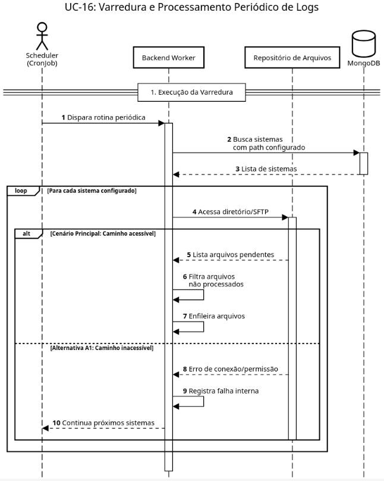
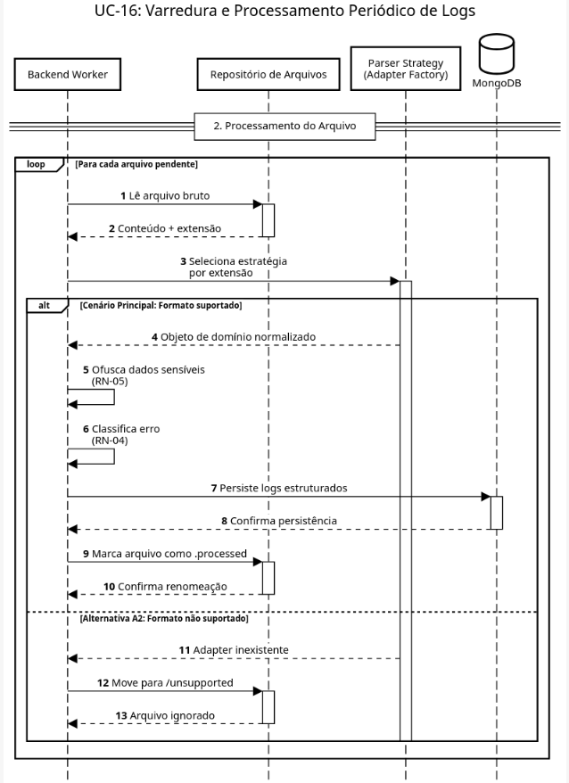

Minha equipe de software : Diagrama de Sequência 16 - Varredura e Processamento Periódico de Logs
Created by Michel Bocchi Junior, last modified by João Pedro Souza Peixoto Saraiva on mai. 23, 2026

@startuml
!theme plain
autonumber
skinparam maxMessageSize 180
skinparam sequence {
ParticipantBackgroundColor #EBF8FF
ParticipantBorderColor #005A9C
ActorBorderColor #005A9C
DatabaseBackgroundColor #EBF8FF
DatabaseBorderColor #005A9C
}
title UC-16: Varredura e Processamento Periódico de Logs
actor "Scheduler\n(CronJob)" as Cron
participant "Backend Worker" as Worker
participant "Repositório de Arquivos" as FS
database "MongoDB" as DB
== 1. Execução da Varredura ==
Cron -> Worker: Dispara rotina periódica
activate Worker
Worker -> DB: Busca sistemas\ncom path configurado
activate DB
DB --> Worker: Lista de sistemas
deactivate DB
loop Para cada sistema configurado
Worker -> FS: Acessa diretório/SFTP
activate FS
alt Cenário Principal: Caminho acessível
FS --> Worker: Lista arquivos pendentes
Worker -> Worker: Filtra arquivos\nnão processados
Worker -> Worker: Enfileira arquivos
else Alternativa A1: Caminho inacessível
FS --> Worker: Erro de conexão/permissão
Worker -> Worker: Registra falha interna
Worker --> Cron: Continua próximos sistemas
end
deactivate FS
end
@enduml

@startuml
!theme plain
autonumber
skinparam maxMessageSize 180
skinparam sequence {
ParticipantBackgroundColor #EBF8FF
ParticipantBorderColor #005A9C
ActorBorderColor #005A9C
DatabaseBackgroundColor #EBF8FF
DatabaseBorderColor #005A9C
}
title UC-16: Varredura e Processamento Periódico de Logs
participant "Backend Worker" as Worker
participant "Repositório de Arquivos" as FS
participant "Parser Strategy\n(Adapter Factory)" as Parser
database "MongoDB" as DB
== 2. Processamento do Arquivo ==
loop Para cada arquivo pendente
Worker -> FS: Lê arquivo bruto
activate FS
FS --> Worker: Conteúdo + extensão
deactivate FS
Worker -> Parser: Seleciona estratégia\npor extensão
activate Parser
alt Cenário Principal: Formato suportado
Parser --> Worker: Objeto de domínio normalizado
Worker -> Worker: Ofusca dados sensíveis\n(RN-05)
Worker -> Worker: Classifica erro\n(RN-04)
Worker -> DB: Persiste logs estruturados
activate DB
DB --> Worker: Confirma persistência
deactivate DB
Worker -> FS: Marca arquivo como .processed
activate FS
FS --> Worker: Confirma renomeação
deactivate FS
else Alternativa A2: Formato não suportado
Parser --> Worker: Adapter inexistente
Worker -> FS: Move para /unsupported
activate FS
FS --> Worker: Arquivo ignorado
deactivate FS
end
deactivate Parser
end
deactivate Worker
@enduml
{kind=link}
{kind=link}